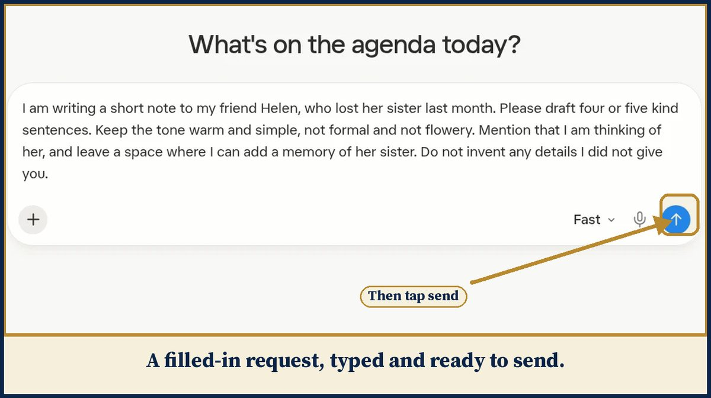
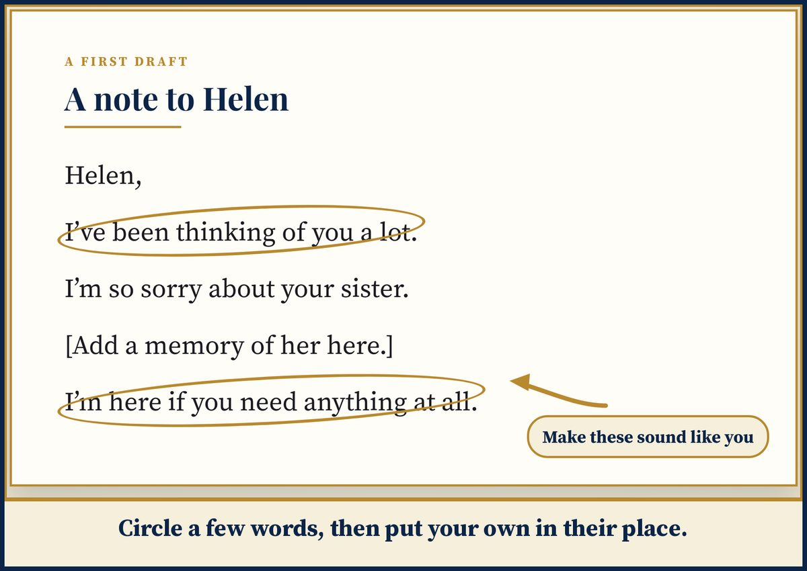
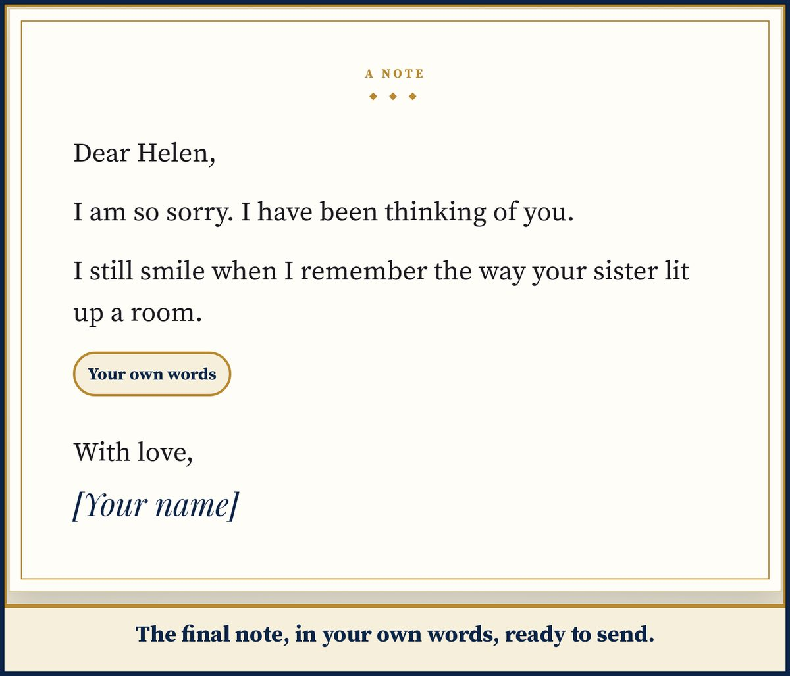

Lesson 2 of 8
Write the note you have been meaning to send
In Lesson 1, we practiced asking a clear request. Today we will use that same recipe to write a note you have been meaning to send, and then change it so it sounds like you.
Grok can draft. You decide. That is the most important step in this lesson.
Notes Grok can help with
A thank-you. A condolence. An invitation. A note to a doctor or an elected official. A message you have been putting off.
You do not have to be a “writer” to send a good note. You only need to say who it is for, what happened, and how you want it to sound.
Tell Grok three things
- Who the note is for. A name and your relationship are enough.
- What happened. A few plain facts. You do not need the whole story.
- The tone you want. Warm, brief, formal, or light.
Here is a filled-in request you can adapt.
A filled-in request
I am writing a short note to my friend Helen, who lost her sister last month. Please draft four or five kind sentences. Keep the tone warm and simple, not formal and not flowery. Mention that I am thinking of her, and leave a space where I can add a memory of her sister. Do not invent any details I did not give you.

Read it out loud, then make it yours
When the draft comes back, read it out loud. If a word does not sound like you, change it. Keep the phrases that do.
Grok often chooses words that are a little too smooth. That is all right. Circle at least two words or phrases and put your own in their place. You might change “I am deeply sorry for your loss” to “I am so sorry. I have been thinking of you.”

Then copy the final version into a letter or an email. Add your own closing, and send it when you are ready.

Ask for a second version without starting over
You do not need to begin a new conversation. Stay on the same page and type a short follow-up, such as:
- Shorter, please. Keep the sentence about thinking of her.
- A little more formal, but still kind.
- Take out anything that sounds flowery.
- Give me two versions: one brief, and one a little longer.
A safety note
Do not paste other people’s private information into the request. That includes medical details, account numbers, and a home address they would not want shared.
Grok drafts. You decide what gets sent.
Try it today
Choose one note you owe someone, even a short one. Let Grok draft it. Read it aloud. Change at least two words so it sounds like you. Then send it if you are ready, or save it.